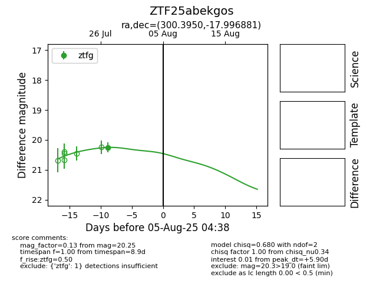

Target ZTF25abekgos at 2025-08-05 04:38, see:
FINK: fink-portal.org/ZTF25abekgos
Lasair: lasair-ztf.lsst.ac.uk/objects/ZTF25abekgos
ALeRCE: alerce.online/object/ZTF25abekgos
alt names
ZTF25abekgos (ztf,fink)
coordinates:
equatorial (ra, dec) = (300.3950,-17.99688)
galactic (l, b) = (23.8903,-23.32296)
photometry
last ztfg=20.25
1 ztfg detections
